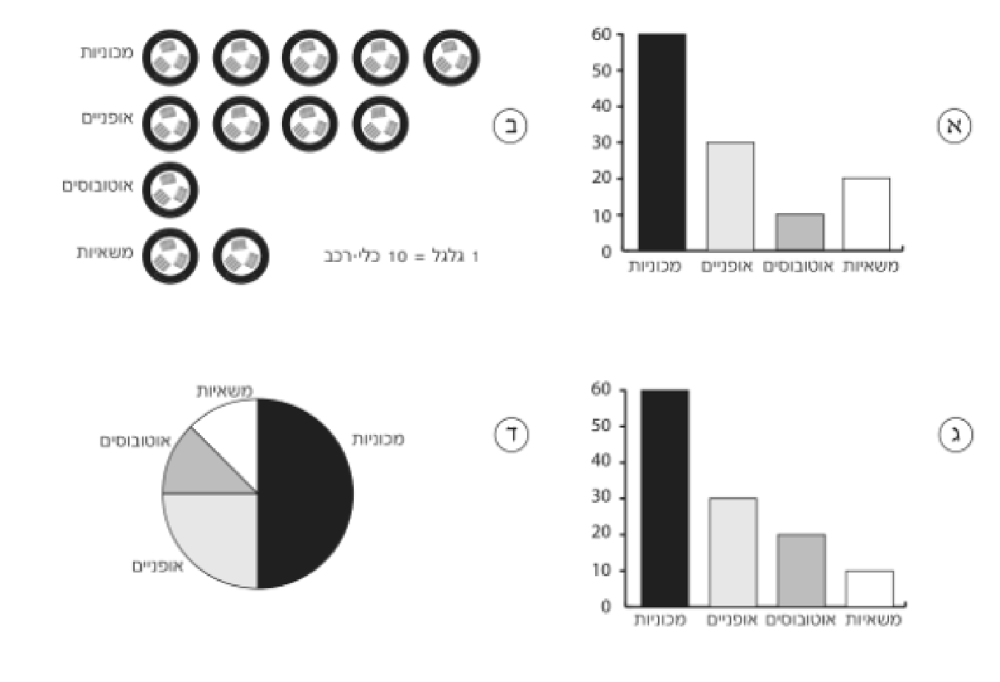

תחום אי־וודאות
1
אאיסוף וארגון נתוניםסטטיסטיקה · כיתה ז' · טבלאות, דיאגרמות ושכיחות
1
ארבעה תלמידים צפו במשך שעה בתנועת כלי־הרכב שעברו ליד בית־ספרם. הטבלה מציגה את תוצאות התצפית:
| מספר | סוג כלי־הרכב |
|---|---|
| 60 | מכוניות |
| 30 | אופניים |
| 10 | אוטובוסים |
| 20 | משאיות |
כל אחד מהתלמידים שרטט תרשים להצגת התוצאות. איזה מבין התרשימים מציג את התוצאות בצורה נכונה?

א.תרשים א
ב.תרשים ב
ג.תרשים ג
ד.תרשים ד